Popular Safari Destinations:
Maasai Mara National Reserve: Known for the Great Migration of wildebeest and zebras. Amboseli National Park: Famous for its large herds of elephants.
Tanzania:
Serengeti National Park: Another prime location for the Great Migration and home to the "Big Five" (lion, elephant, buffalo, leopard, and rhinoceros). Ngorongoro Conservation Area: Features the Ngorongoro Crater, a natural enclosure for a wide variety of wildlife.South Africa:
Kruger National Park: One of Africa's most famous parks, offering diverse ecosystems and abundant wildlife. Addo Elephant National Park: Known for its large population of elephants.Okavango Delta:
A UNESCO World Heritage Site with a unique ecosystem, attracting a rich array of wildlife.
National Park:
Famous for its large elephant herds.
Namibia:
Etosha National Park: Home to a salt pan and a variety of wildlife, including lions, giraffes, and rhinos. Wildlife: The Big Five: Lion, Elephant, Buffalo, Leopard, Rhinoceros - these are considered the most iconic and sought-after animals on safari. Great Migration: An annual migration of wildebeest and zebras between the Serengeti in Tanzania and the Maasai Mara in Kenya. Birdlife: Africa is home to a diverse range of bird species. Many safari destinations offer excellent birdwatching opportunities. Primates: Countries like Uganda and Rwanda are known for gorilla trekking, providing a chance to see mountain gorillas in their natural habitat. Diverse Landscapes: From savannas and grasslands to deserts and rainforests, Africa's varied landscapes contribute to its rich biodiversity. Types of Safaris: Game Drives: The most common way to explore wildlife reserves, conducted in open vehicles with experienced guides. Walking Safaris: Offers a more intimate experience with nature, allowing participants to explore on foot under the guidance of armed rangers. Balloon Safaris: Provides a unique perspective by allowing visitors to float over the landscapes and observe wildlife from above. Canoe Safaris: Suitable for areas with water bodies, offering a different way to encounter wildlife.
Conservation Efforts:
Many safari destinations actively engage in conservation efforts to protect endangered species and preserve ecosystems. Responsible tourism practices, such as low-impact accommodations and ethical wildlife viewing, are increasingly emphasized. Before embarking on a safari, it's important to choose a reputable tour operator, be informed about the local wildlife, and practice responsible tourism to minimize environmental impact and contribut
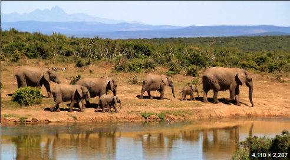 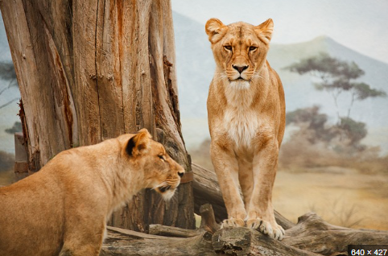 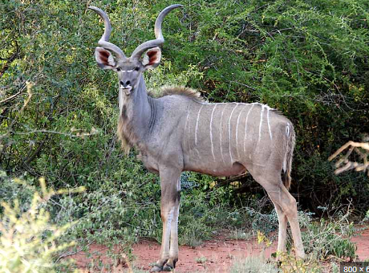 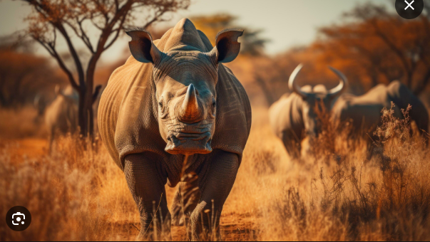 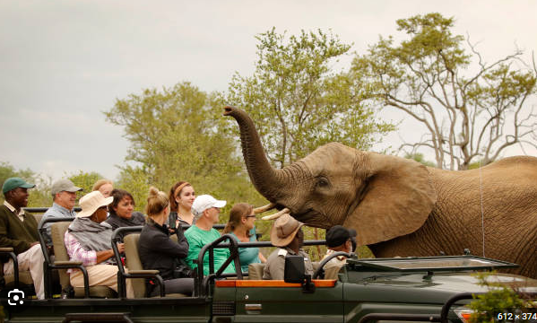
Apartheid history
Apartheid was a system of institutionalized racial segregation and discrimination that took place in South Africa from 1948 to the early 1990s. The word "apartheid" is Afrikaans for "apartness," and it reflected the government's policy of separating different racial and ethnic groups in the country. Here's an overview of the history of apartheid in South Africa:Key Events and Phases:
National Party's Rise to Power (1948):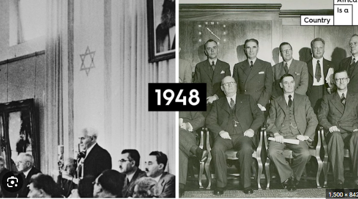
National Party, led by Dr. Daniel François Malan, won the general elections in 1948, and this marked the beginning of the official implementation of apartheid policies.
Apartheid Legislation:
The government began enacting a series of laws that institutionalized racial segregation. These laws included the Population Registration Act, Group Areas Act, and the Suppression of Communism Act.Homelands Policy:
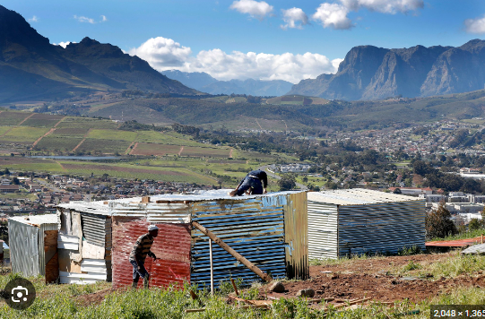One of the central tenets of apartheid was the creation of separate "homelands" or "Bantustans" for different racial groups. These were designated areas where each racial group was supposed to live.
Pass Laws:
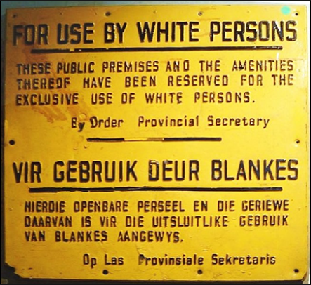Pass laws were enacted to restrict the movement of black South Africans. They were required to carry passes that specified where they were allowed to live and work. Violating these laws often resulted in arrest and imprisonment.
Resistance and Protests:
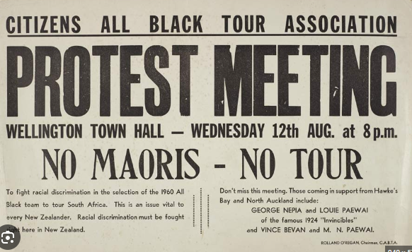The apartheid policies were met with resistance from various quarters. Organizations like the African National Congress (ANC), Pan Africanist Congress (PAC), and others emerged to challenge the system. The Sharpeville Massacre in 1960, where police killed peaceful protesters, drew international attention.
Rivonia Trial (1964):
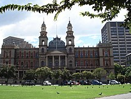Leaders of the anti-apartheid movement, including Nelson Mandela, were arrested and charged with sabotage. Mandela and several others were sentenced to life imprisonment during the famous Rivonia Trial. International Isolation: As awareness of apartheid grew globally, there was increasing condemnation and calls for sanctions against South Africa. Many countries and organizations implemented economic and cultural boycotts. End of Apartheid (1990-1994): In 1990, President F.W. de Klerk announced the end of apartheid and the beginning of negotiations to establish a non-racial democratic system. Nelson Mandela was released from prison, and the ANC was unbanned. Multi-racial elections were held in 1994, leading to Mandela becoming the first black president of South Africa.
Legacy:
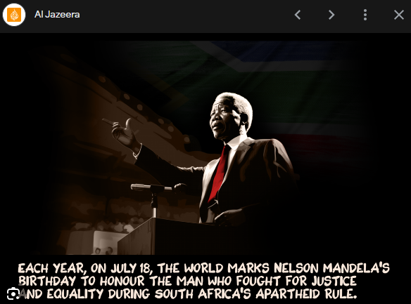 The legacy of apartheid still influences South Africa today. Efforts have been made to address the social, economic, and political imbalances created by decades of racial discrimination. The Truth and Reconciliation Commission (TRC) was established to deal with the crimes committed during the apartheid era and promote national healing. South Africa's post-apartheid constitution is known for its commitment to human rights and equality. Despite the progress made since the end of apartheid, challenges such as economic inequality and social divisions persist, and the country continues to work towards building a more inclusive and just society.ADVENTURES AND SPORT IN SOUTH AFRICA


 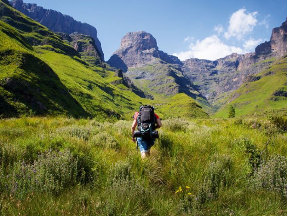
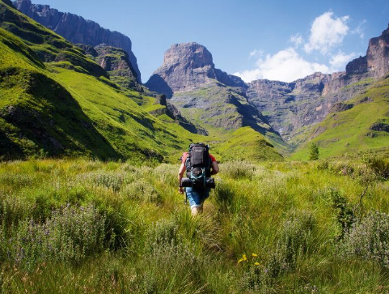
Synopsis:
It is also the perfect destination to escape from the scorching heat and given most of the schools will be on their summer break, this makes most South African cities an undeniable destination to add to your list. Moreover, a trip to the South Africa won’t be too heavy on your pockets – attractive currency exchange rates make it a lucrative and value-for-money, long-haul destination.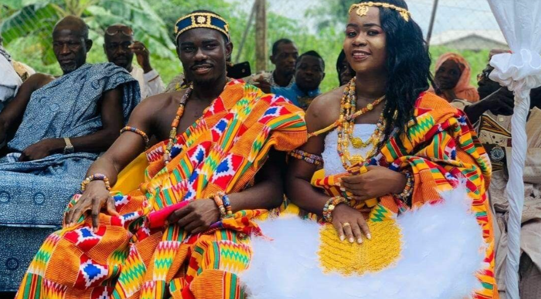 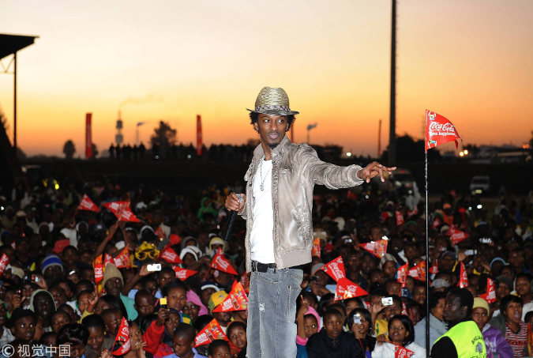 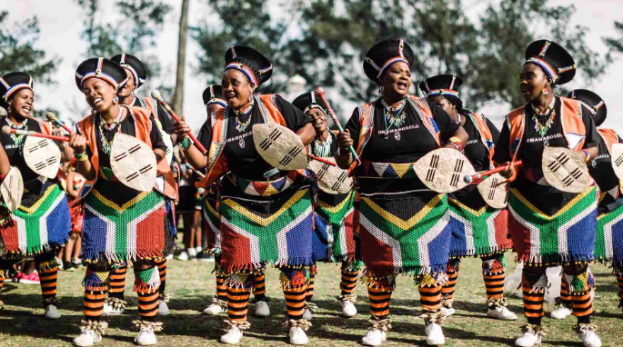